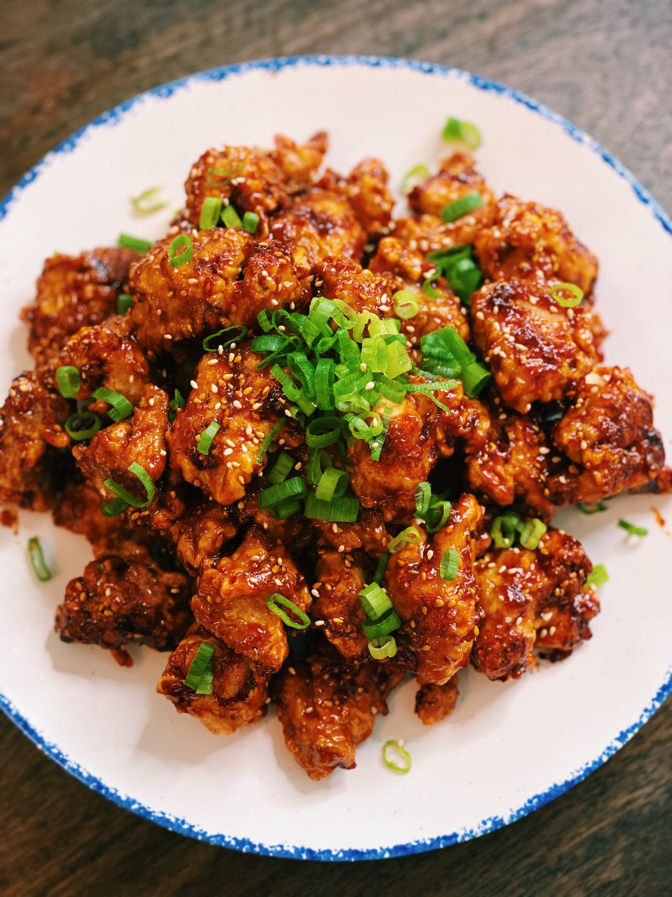

Spicy Honey Garlic Chicken Bites
Top Recipes This Week
National Pancake Day!

Reviews
Fantastic recipes my whole family loved it!
The recipes on here are incredible! I was able to find simple meals for my busy schedule and even tried a few new dishes I never would have thought to make. Highly recommend for anyone looking to improve their cooking game
The recipe instructions are clear, and I love how the website suggests alternatives for dietary preferences!